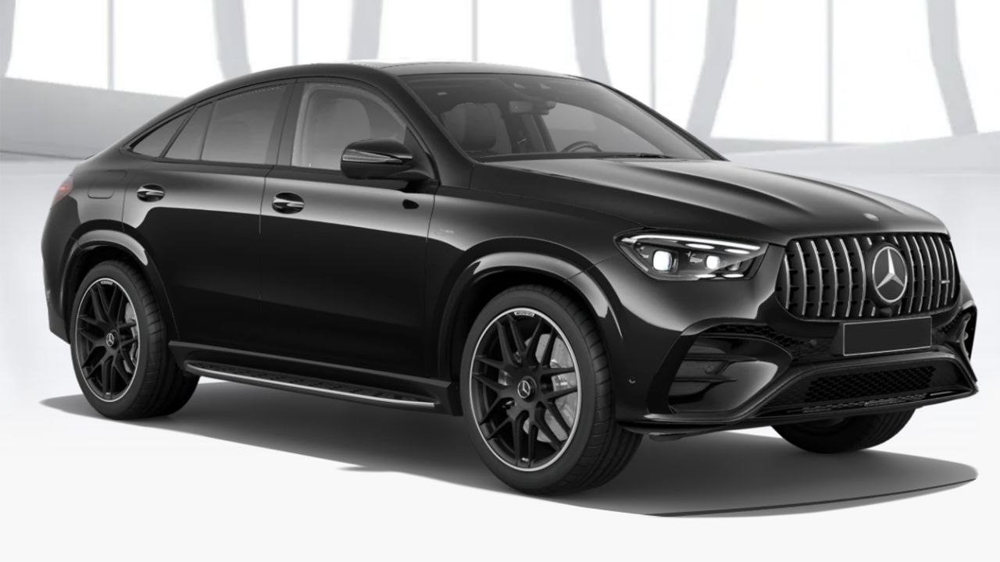

The AMG GLE 53 is driven by a potent 3.0L Inline-6 engine, delivering an exhilarating 429 horsepower and 413 lb-ft of torque. This unit is expertly complemented by the 48V mild-hybrid EQ Boost system, ensuring instantaneous response and lag-free acceleration. Power is dynamically managed by the AMG Performance 4MATIC®+ all-wheel drive, which provides exceptional grip and confident handling. The result is a perfect fusion of SUV practicality and true AMG sports car dynamics.
New 2025 Marcedes-Benz GLE 53
The 2025 Mercedes-Benz AMG GLE 53 is available in Obsidian Black Metallic, offering a sleek and sophisticated appearance. This color option is featured in both the SUV and Coupe body styles.

Key specifications:
- Engine: 3.0L Inline-6 Turbocharged with EQ Boost
- Output: 429 horsepower and 413 lb-ft of torque
- Transmission: 9-speed AMG SPEEDSHIFT® automatic
- Drivetrain: AMG Performance 4MATIC®+ all-wheel drive>
- Hybrid System: 48V mild-hybrid system with an electric supercharger
- Fuel Economy: Approximately 18 MPG city / 22 MPG highway